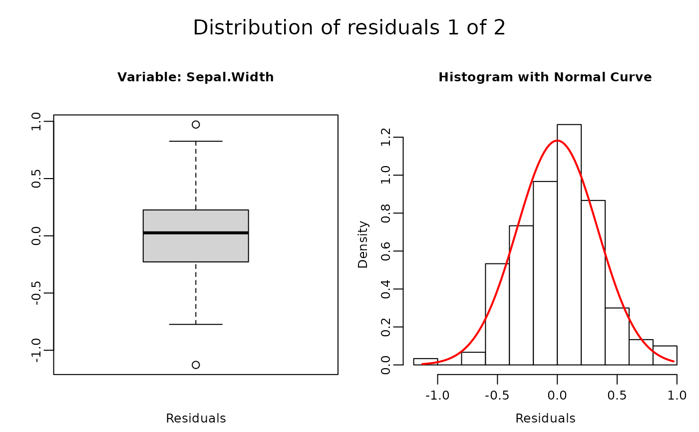
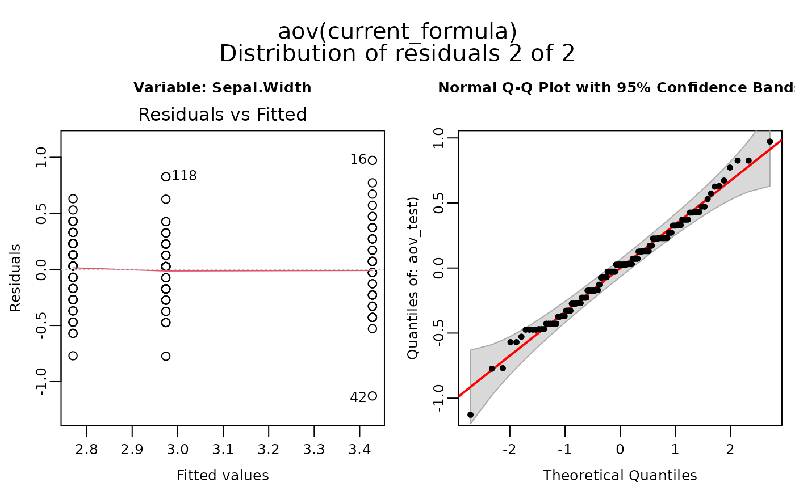
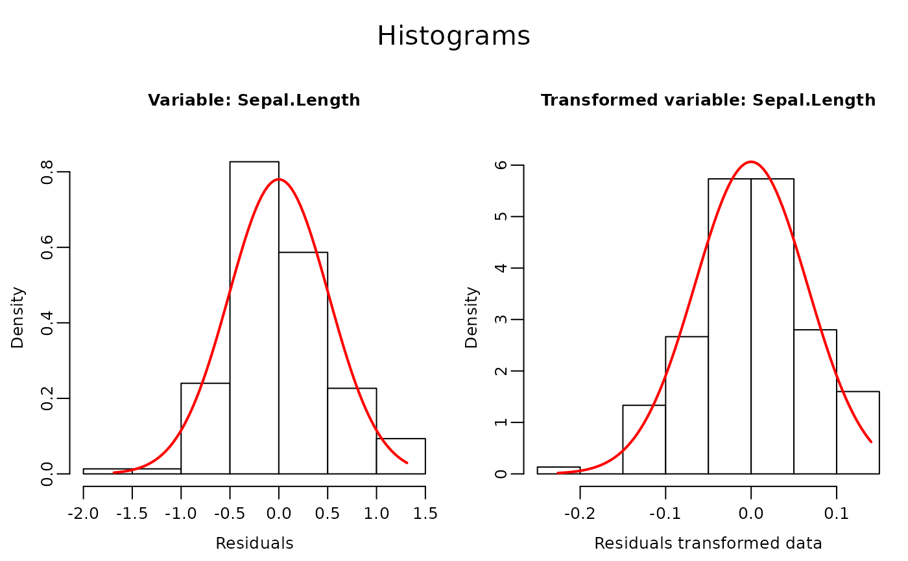
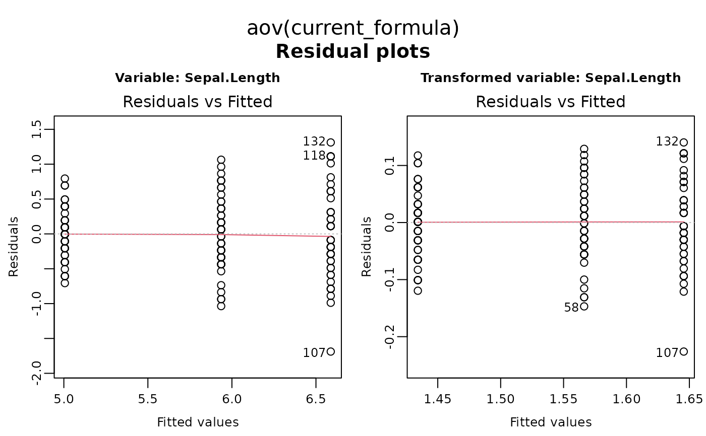
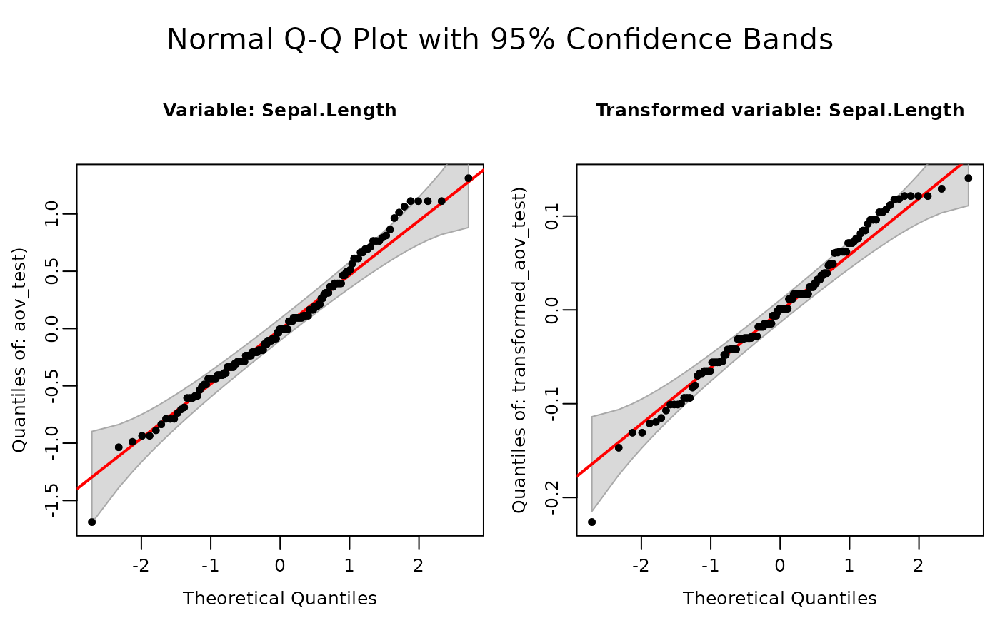

Perform multiple aov() functions with optional data transformation, inspection and Post Hoc test.
f_aov.RdPerforms an Analysis of Variance (ANOVA) on a given dataset with options for (Box-Cox) transformations, normality tests, and post-hoc analysis. Several response parameters can be analysed in sequence and the generated output can be in various formats ('Word', 'pdf', 'Excel').
Usage
f_aov(
formula,
data = NULL,
norm_plots = TRUE,
ANCOVA = FALSE,
transformation = TRUE,
force_transformation = NULL,
alpha = 0.05,
adjust = "sidak",
intro_text = TRUE,
close_generated_files = FALSE,
open_generated_files = TRUE,
output_type = "off",
save_as = NULL,
save_in_wdir = FALSE
)Arguments
- formula
A formula specifying the model to be fitted. More response variables can be added using
-or+(e.g.,response1 + response2 ~ predictor) to do a sequentialaov()for each response parameter.- data
A data frame containing the variables in the model.
- norm_plots
Logical. If
TRUE, plots are included in the output files. Default isTRUE.- ANCOVA
Logical. If
TRUE, prevents automatic conversion of predictors to factors, allowing for Analysis of Covariance (ANCOVA). Default isFALSE.- transformation
Logical or character string. If
TRUE, or if"bestnormalize", appliesbestNormalize()transformation if residuals are not normal. If"boxcox"applies a boxcox transformation. IfFALSEno transformation will be applied. Default isTRUE.- force_transformation
Character string. A vector containing the names of response variables that should be transformed regardless of the normality test. Default is
NULL- alpha
Numeric. Significance level for ANOVA, post hoc tests, and Shapiro-Wilk test. Default is
0.05.- adjust
Character string specifying the method used to adjust p-values for multiple comparisons. Available methods include:
- "tukey"
Tukey's Honest Significant Difference method, appropriate for all pairwise comparisons. Controls family-wise error rate.
- "sidak"
Šidák correction that controls the family-wise error rate. Less conservative than Bonferroni.
- "bonferroni"
Conservative adjustment that multiplies p-values by the number of comparisons.
- "none"
No adjustment. Equivalent to Fisher's LSD method.
- "fdr"
False Discovery Rate adjustment, controls the expected proportion of false positives among significant results.
Default is
"sidak".- intro_text
Logical. If
TRUE, includes a short explanation about ANOVA assumptions in the output file. Default isTRUE.- close_generated_files
Logical. If
TRUE, closes open 'Excel' or 'Word' files depending on the output format. This to be able to save the newly generated file by thef_aov()function. 'Pdf' files should also be closed before using the function and cannot be automatically closed. Default isFALSE.- open_generated_files
Logical. If
TRUE, Opens the generated output files ('pdf', 'Word' or 'Excel') files depending on the output format. This to directly view the results after creation. Files are stored in tempdir(). Default isTRUE.- output_type
Character string specifying the output format:
"pdf","word","excel","rmd","console"or"off"(no file generated). The option"console"forces output to be printed, the option"rmd"saves rmd code in the output object not in a file. Default is"off".- save_as
Character string specifying the output file path (without extension). If a full path is provided, output is saved to that location. If only a filename is given, the file is saved in
tempdir(). If only a directory is specified (providing an existing directory with trailing slash), the file is named "dataname_aov_output" in that directory. If an extension is provided the output format specified with option "output_type" will be overruled. Defaults tofile.path(tempdir(), "dataname_summary.pdf").- save_in_wdir
Logical. If
TRUE, saves the file in the working directory. Default isFALSE, this avoid unintended changes to the global environment. Ifsave_aslocation is specifiedsave_in_wdiris overwritten bysave_as.
Value
An object of class 'f_aov' containing results from aov(), normality tests, transformations, and post hoc tests. Using the option "output_type", it can also generate output in the form of: R Markdown code, 'Word', 'pdf', or 'Excel' files. Includes print and plot methods for 'f_aov' objects.
Details
The function performs the following steps:
Check if all specified variables are present in the data.
Ensure that the response variable is numeric.
Perform Analysis of Variance (ANOVA) using the specified formula and data.
If
shapiro = TRUE, check for normality of residuals using the Shapiro-Wilk test.If residuals are not normal and
transformation = TRUEapply a data transformation.If significant differences are found in ANOVA, proceed with post hoc tests using estimated marginal means from
emmeans()and Sidak adjustment (or another option ofadjust =.
More response variables can be added using - or + (e.g., response1 + response2 ~ predictor) to do a sequential aov() for each response parameter captured in one output file.
Outputs can be generated in multiple formats ("pdf", "word", "excel" and "rmd") as specified by output_type. The function also closes any open 'Word' files to avoid conflicts when generating 'Word' documents. If output_type = "rmd" is used it is adviced to use it in a chunk with {r, echo=FALSE, results='asis'}
This function requires [Pandoc](https://github.com/jgm/pandoc/releases/tag) (version 1.12.3 or higher), a universal document converter.
Windows: Install Pandoc and ensure the installation folder.
(e.g., "C:/Users/your_username/AppData/Local/Pandoc") is added to your system PATH.macOS: If using Homebrew, Pandoc is typically installed in "/usr/local/bin". Alternatively, download the .pkg installer and verify that the binary’s location is in your PATH.
Linux: Install Pandoc through your distribution’s package manager (commonly installed in "/usr/bin" or "/usr/local/bin") or manually, and ensure the directory containing Pandoc is in your PATH.
If Pandoc is not found, this function may not work as intended.
Author
Sander H. van Delden plantmind@proton.me
Examples
# Make a factor of Species.
iris$Species <- factor(iris$Species)
# The left hand side contains two response variables,
# so two aov's will be conducted, i.e. "Sepal.Width"
# and "Sepal.Length" in response to the explanatory variable: "Species".
f_aov_out <- f_aov(Sepal.Width + Sepal.Length ~ Species,
data = iris,
# Save output in MS Word file (Default is console)
output_type = "word",
# Do boxcox transformation for non-normal residual (Default is bestnormalize)
transformation = "boxcox",
# Do not automatically open the file.
open_generated_files = FALSE
)
#> Saving output in: /tmp/RtmpDUIw9V/iris_aov_output.docx
# Print output to the console.
print(f_aov_out)
#>
#>
#> ==========================================================
#> ANOVA of repsone variable: Sepal.Width
#> ===========================================================
#>
#> aov call: Sepal.Width ~ Species
#>
#> Summary Table:
#> Df Sum Sq Mean Sq F value Pr(>F)
#> Species 2 11.35 5.672 49.16 <2e-16 ***
#> Residuals 147 16.96 0.115
#> ---
#> Signif. codes: 0 ‘***’ 0.001 ‘**’ 0.01 ‘*’ 0.05 ‘.’ 0.1 ‘ ’ 1
#>
#> Post-Hoc Analysis:
#> Species emmean SE df lower.CL upper.CL Letter
#> versicolor 2.770 0.0480391 147 2.653974 2.886026 a
#> virginica 2.974 0.0480391 147 2.857974 3.090026 b
#> setosa 3.428 0.0480391 147 3.311974 3.544026 c
#>
#> Confidence level used: 0.95
#> Conf-level adjustment: sidak method for 3 estimates
#> P value adjustment: sidak method for 3 tests
#> significance level used: alpha = 0.05
#> NOTE: If two or more means share the same grouping symbol,
#> then we cannot show them to be different.
#> But we also did not show them to be the same.
#>
#>
#> ==========================================================
#> ANOVA of Box-Cox TRANSFORMED repsone variable: Sepal.Length
#> ===========================================================
#>
#> aov call: Sepal.Length ~ Species
#>
#> TRANSFORMED Summary Table:
#> Df Sum Sq Mean Sq F value Pr(>F)
#> Species 2 63.21 31.606 119.3 <2e-16 ***
#> Residuals 147 38.96 0.265
#> ---
#> Signif. codes: 0 ‘***’ 0.001 ‘**’ 0.01 ‘*’ 0.05 ‘.’ 0.1 ‘ ’ 1
#>
#> TRANSFORMED Post-Hoc Analysis:
#> Species emmean SE df lower.CL upper.CL Letter
#> setosa 1.434181 0.009363675 147 1.411565 1.456796 a
#> versicolor 1.566352 0.009363675 147 1.543737 1.588968 b
#> virginica 1.645523 0.009363675 147 1.622908 1.668139 c
#>
#> Confidence level used: 0.95
#> Conf-level adjustment: sidak method for 3 estimates
#> P value adjustment: sidak method for 3 tests
#> significance level used: alpha = 0.05
#> NOTE: If two or more means share the same grouping symbol,
#> then we cannot show them to be different.
#> But we also did not show them to be the same.
#>
#>
# Plot residual plots.
plot(f_aov_out)




#To print rmd output set chunck option to results = 'asis' and use cat().
f_aov_rmd_out <- f_aov(Sepal.Width ~ Species, data = iris, output_type = "rmd")
cat(f_aov_rmd_out$rmd)
#>
#> # Assumptions of ANOVA
#> Checking the assumptions of ANOVA (Analysis of Variance) are critical for ensuring the validity of its results:
#>
#>
#> ## 1. Independence
#> - Observations must be independent both within and between groups.
#> - This means that the value of one observation should not influence another.
#> - Independence violations cannot be corrected statistically and invalidate the analysis, making proper experimental design essential.
#>
#> ## 2. Normality
#> - The residuals (errors) of the model are assumed to be normally distributed.
#> - This assumption applies to the residuals, not necessarily the raw data.
#> - ANOVA is robust to minor deviations from normality, especially with large and balanced sample sizes. For small or unbalanced samples, violations can lead to **unreliable results**, requiring a data transformation or alternative tests (Welch's ANOVA, Kruskal-Wallis Test).
#> - Normality of the residuals can be tested using a Shapiro Wilcoxon or Anderson-Darling Test. It can also be graphically assessed using a Box Plot, Q-Q plot or Histogram (see figure below).
#>
#> ## 3. Homogeneity of Variances (Homoscedasticity)
#> - The variances within each group should be approximately equal.
#> - Equal variances ensure that the F-test statistic is reliable.
#> - Homogeneity of variances assumption in ANOVA should be tested on the residuals, not directly on the raw data.
#> - Levene's test or Bartlett's test can be applied to check for homogeneity of variances.
#> - If violated, a data transformation or alternative tests (Welch's ANOVA, Kruskal-Wallis Test) are required. It can also be graphically assessed by plotting residuals vs. fitted values and checking for patterns.
#>
#>
#> ## 4. Additivity (No Unaccounted Systematic Effects)
#> - For models without interaction terms, it is assumed that the effects of different factors are additive. That is, the combined effect of factors can be expressed as the sum of their individual effects.
#> - However, if interaction terms are included in the model, this assumption does not apply because ANOVA explicitly accounts for interactions.
#>
#>
#>
#> # Analysis of: Sepal.Width
#>
#> ## Normality and homoscedasticity of residuals of: Sepal.Width
#> Levene's test for homogeneity of residuals: F-Statisic = 0.5902 p-value = 0.5555
#> According to 'Levene's Test' (0.5555 > 0.05) residuals **have equal variance** (homoscedasticity).
#>
#>
#> Shapiro-Wilk Test for Normality of residuals: W = 0.9895 p-value = 0.323
#> According to 'Shapiro-Wilk Test' (0.323 > 0.05) residuals **ARE normally distributed**.
#>
#>
#> Anderson-Darling normality test : A = 0.495 p = 0.2116
#> Check the plots in the figure below to assess normality.
#> 
#>
#>
#>
#>
#>
#> ## ANOVA Summary of Sepal.Width
#>
#> ------------------------------------------------------------------
#> Df Sum Sq Mean Sq F value Pr(>F)
#> --------------- ----- -------- --------- --------- ---------------
#> **Species** 2 11.34 5.6725 49.16 **4.492e-17**
#>
#> **Residuals** 147 16.96 0.1154 NA NA
#> ------------------------------------------------------------------
#>
#>
#>
#> aov call: Sepal.Width ~ Species
#>
#>
#>
#>
#> ## Post Hoc Test Results of Sepal.Width
#>
#> --------------------------------------------------------------------
#> Species emmean SE df lower.CL upper.CL Letter
#> ------------ -------- --------- ----- ---------- ---------- --------
#> versicolor 2.770 0.04804 147 2.654 2.886 a
#>
#> virginica 2.974 0.04804 147 2.858 3.090 b
#>
#> setosa 3.428 0.04804 147 3.312 3.544 c
#> --------------------------------------------------------------------
#>
#> Confidence level used: 0.95
#> Conf-level adjustment: sidak method for 3 estimates
#> P value adjustment: sidak method for 3 tests
#> significance level used: alpha = 0.05
#> NOTE: If two or more means share the same grouping symbol,
#> then we cannot show them to be different.
#> But we also did not show them to be the same.
